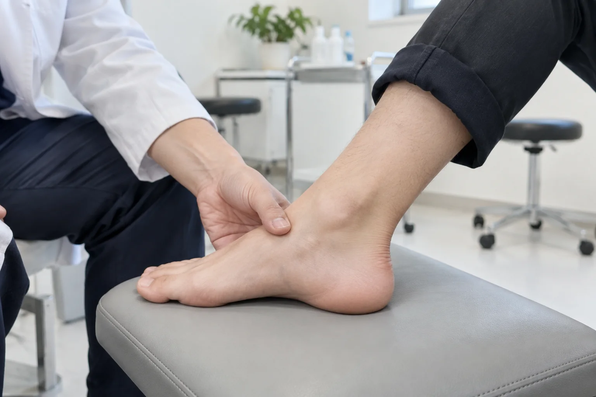
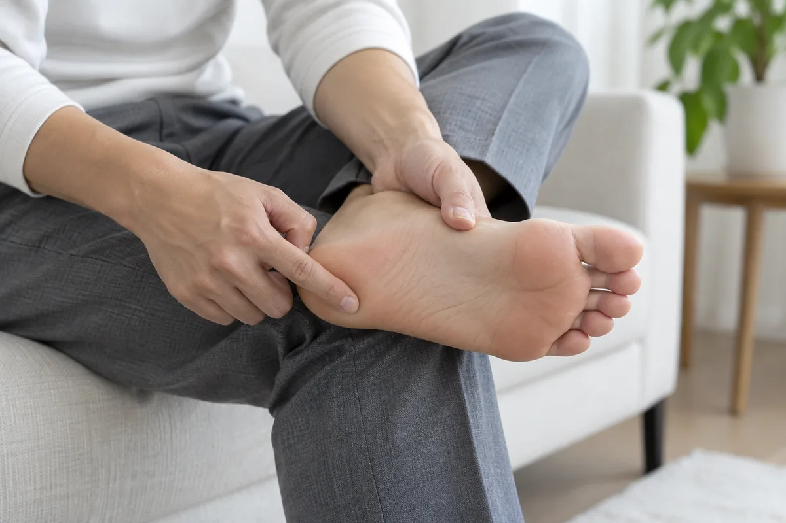
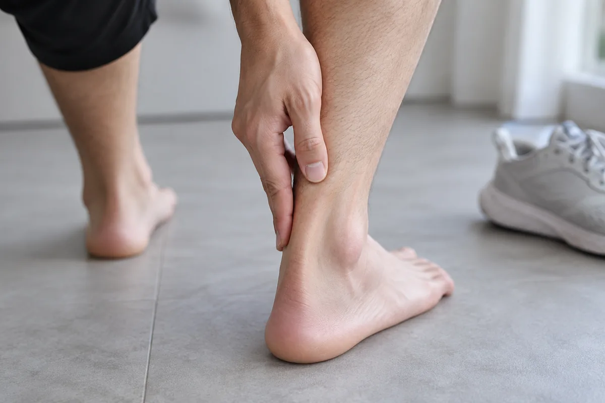
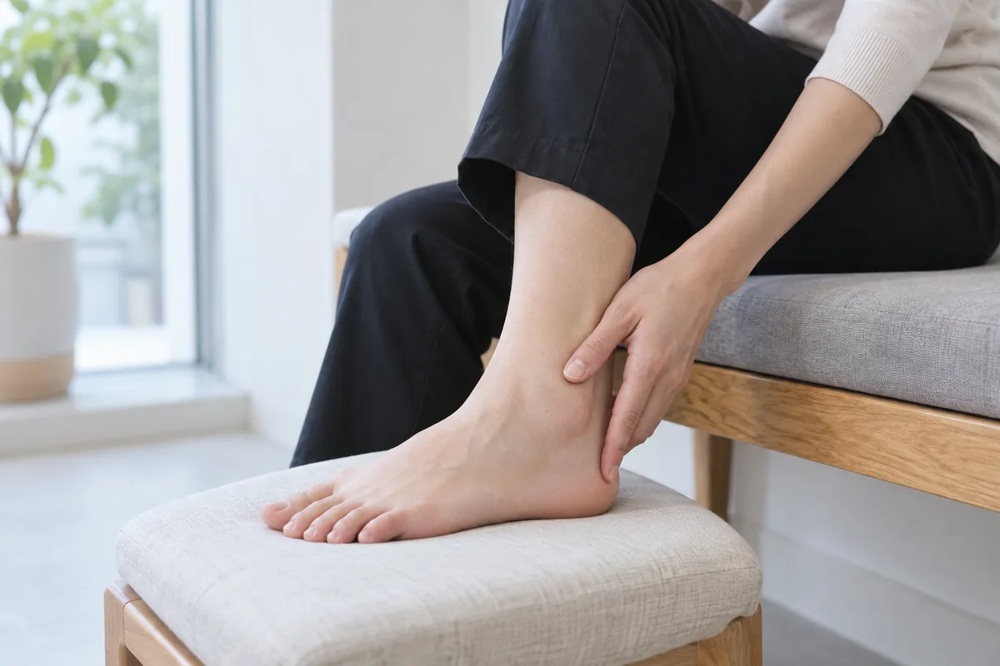
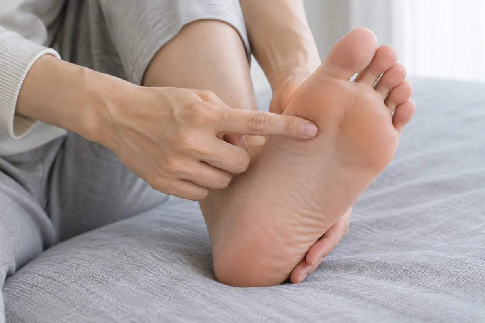

발·발목
발과 발목은 보행 때마다 체중을 받기 때문에 활동량과 신발, 이전 부상의 영향을 받습니다. 통증이 발바닥·뒤꿈치·발목 중 어디에 생기는지, 첫발이나 오래 걸을 때 어떻게 달라지는지 살펴봅니다. 힘줄과 인대, 신경의 상태를 확인해 치료와 생활 관리 방향을 안내합니다.
통증의 위치와 움직임, 생활 습관을 함께 살핀 뒤 필요한 치료 방향을 안내합니다.
CONDITIONS
발·발목 주요 질환

족저근막염
발바닥의 아치를 지지하는 족저근막에 반복적인 부하가 쌓여 뒤꿈치 통증이 생기는 질환입니다. 활동량의 증가, 오래 서 있는 생활, 종아리의 뻣뻣함 등이 관련될 수 있습니다. 통증 위치와 보행 양상을 살펴 다른 발뒤꿈치 질환과 구분합니다.
아침에 일어나거나 오래 쉬었다가 첫발을 디딜 때 뒤꿈치 안쪽이 아픈 경우가 많습니다. 몇 걸음 걸으면 줄었다가 오래 서 있거나 활동한 뒤 다시 심해질 수 있습니다. 발뒤꿈치 바닥의 특정 부위를 누를 때 통증이 느껴지기도 합니다.

아킬레스건염
종아리 근육과 뒤꿈치뼈를 잇는 아킬레스건에 반복적인 부담이 쌓여 생기는 질환입니다. 달리기 강도의 갑작스러운 증가나 종아리 근육의 뻣뻣함 등이 영향을 줄 수 있습니다. 힘줄 중간과 뒤꿈치 부착 부위 중 어디가 아픈지 구분해 살핍니다.
뒤꿈치 위쪽이 아프고 아침에 뻣뻣하며, 활동 후 통증이나 부종이 심해질 수 있습니다. 신발이 닿을 때 불편하거나 힘줄이 두껍게 느껴지기도 합니다. 갑자기 툭 끊어지는 느낌과 함께 걷기 어려워지면 파열 여부를 즉시 확인해야 합니다.

만성 발목 염좌 및 발목 관절 불안정증
발목을 접질린 뒤 인대와 주변 기능이 충분히 회복되지 않아 불안정함이 남는 상태입니다. 반복되는 염좌는 만성 통증과 관절 손상으로 이어질 수 있습니다. 인대의 안정성뿐 아니라 발목 근력과 균형 감각, 이전의 부상 경과를 함께 확인합니다.
울퉁불퉁한 길을 걷거나 방향을 바꿀 때 발목이 꺾일 듯한 느낌이 반복될 수 있습니다. 활동 후 발목 주변이 붓고 뻐근하거나 자주 접질리기도 합니다. 새로 다친 뒤 체중을 싣기 어렵다면 골절 등 다른 손상도 확인해야 합니다.

지간신경종
발가락으로 향하는 신경이 압박과 자극을 받아 주변 조직이 두꺼워지는 상태입니다. 주로 셋째와 넷째 발가락 사이에서 발생하며, 이름과 달리 일반적인 종양은 아닙니다. 앞볼을 조이는 신발이나 높은 굽이 증상을 악화시키는지 함께 살펴봅니다.
발 앞쪽 바닥이 화끈거리거나 발가락 사이로 찌릿한 통증과 저림이 퍼질 수 있습니다. 신발 안에 작은 돌이 들어 있는 듯한 이물감을 느끼기도 합니다. 좁은 신발을 신거나 걸을 때 불편이 커져 신발을 바꾸면 줄어드는 경우가 있습니다.